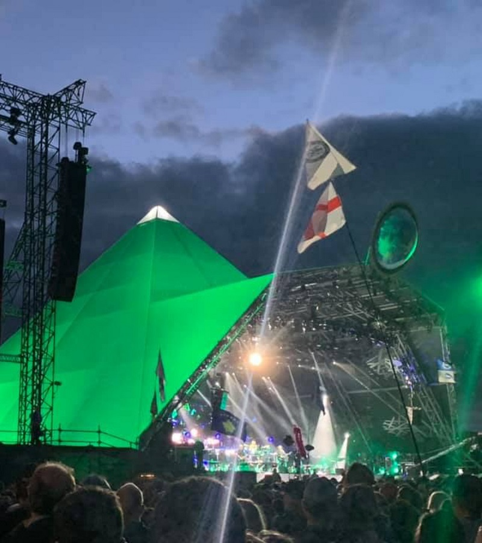
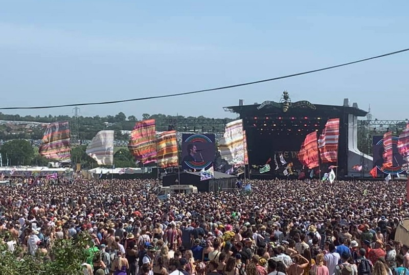
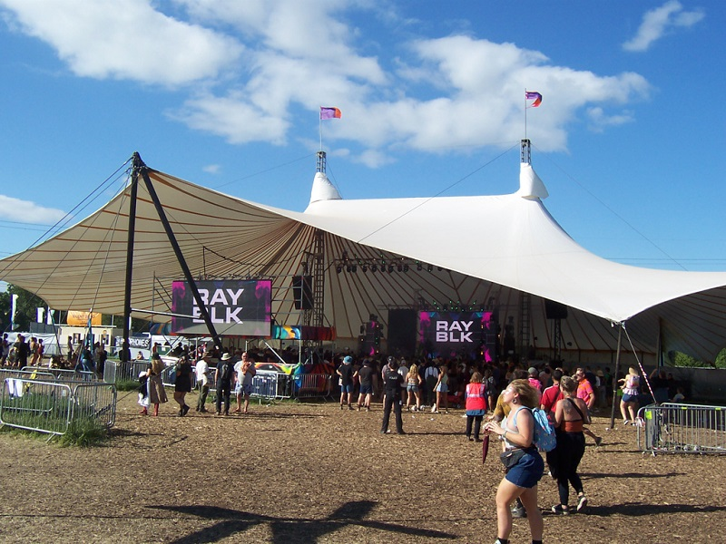
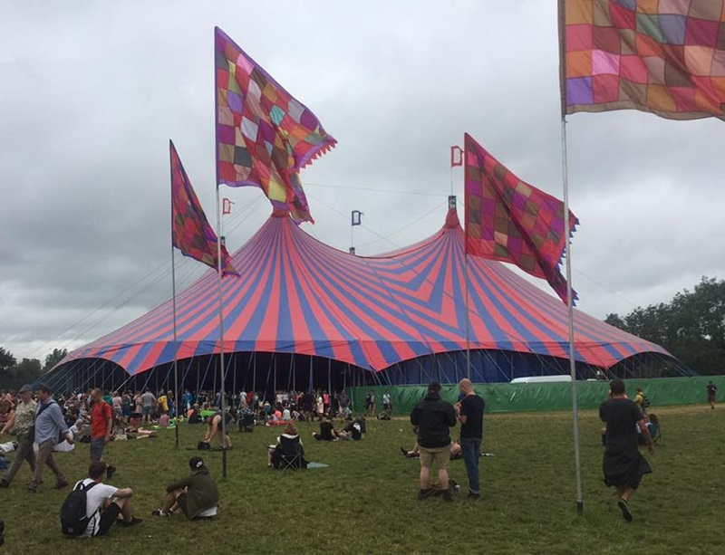
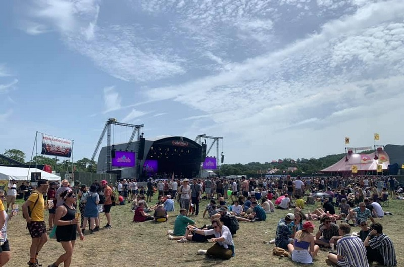
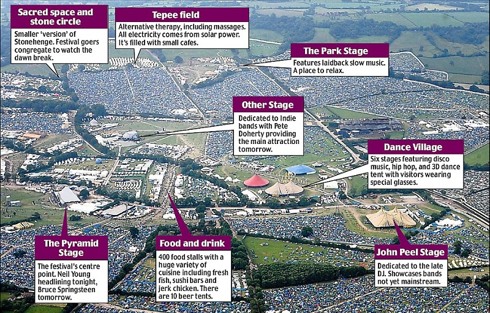

Stages
The Pyramid Stage

The Pyramid Stage is probably the most famous stage in the world. This is where you will see the world’s biggest acts headline. If you want to have a massive sing-along with 100,000 people this is where to come. This is Glasto’s main stage.
The Other Stage

The Other Stage started around the 1980s when the festival started to expand. Now, it seems that there is a new area every year to explore! The Other Stage has attracted acts like Massive Attack, The Pet Shop Boys and The Chemical Brothers.
Silver Hayes

Silver Hayes is a large dance tent. On Saturday, everybody dresses in silver for you’ve guessed it, Silver Saturday. So grab your sequins and sparkle the night away.
Woodsies Stage

The Woodsies Stage hosts up and coming artists from all over the world. This stage looks like a large Orange and Blue tent with flags on top.
The West Holts Stage

The West Holts Stage is where funk meets soul meets psychedelia.
Map of Stages
